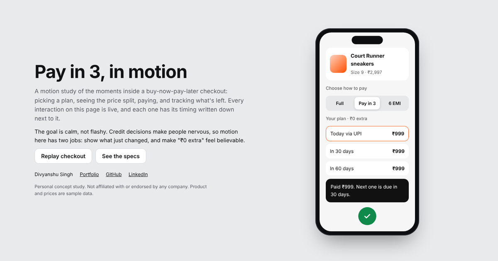
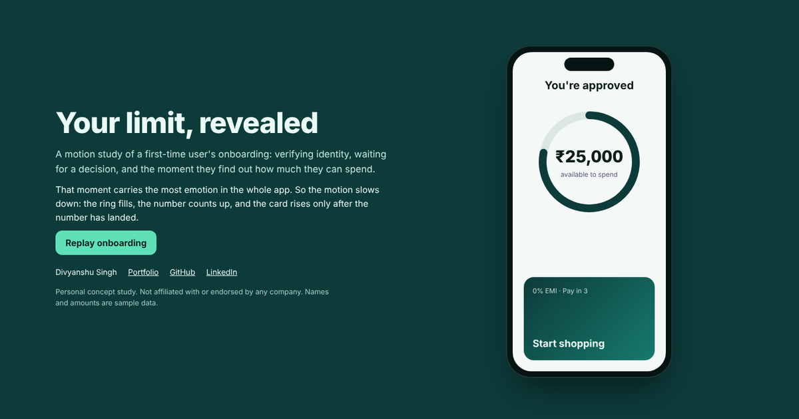
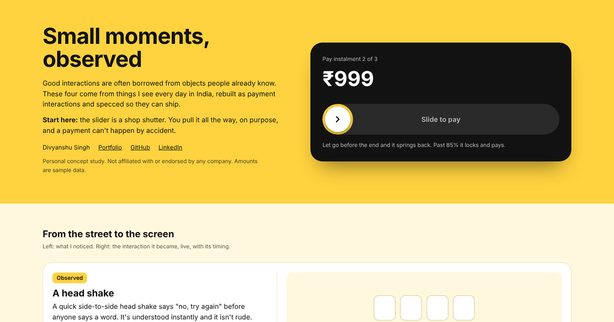

Motion & interaction studies
Three live studies of how payments and credit can feel in motion. Every interaction is clickable, and each one has its duration, easing and reasoning written next to it.

Motion study
Pay in 3, in motion
Plan switcher, price split, a pay button that morphs into its loader, and an instalment tracker.

Motion study
Your limit, revealed
Credit onboarding: KYC progress, a limit ring that counts up, a tilting card, skeleton loading.

Interaction study
Small moments, observed
Everyday Indian objects turned into payment interactions: shutter, head shake, kirana chit, gullak.
Personal concept studies. Not affiliated with or endorsed by any company. Amounts are sample data.